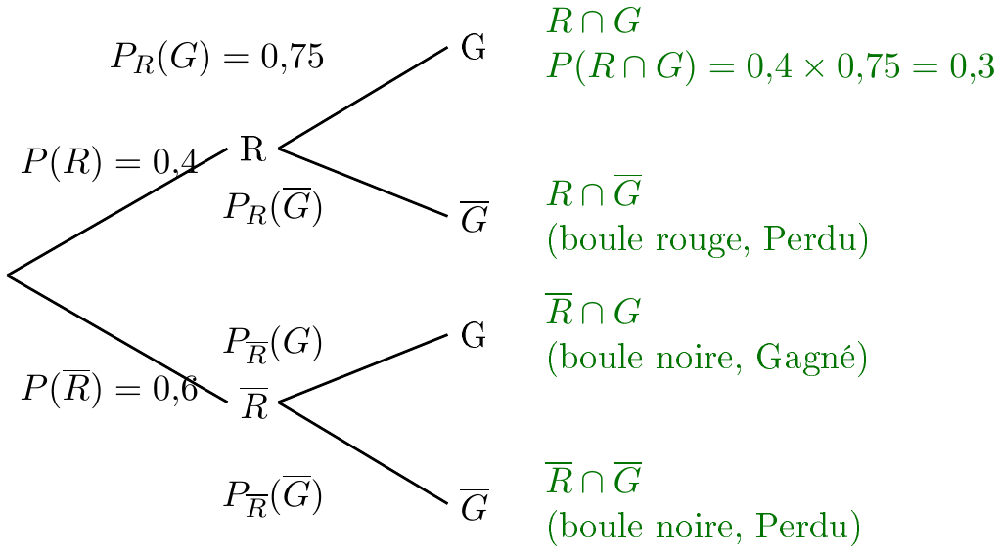
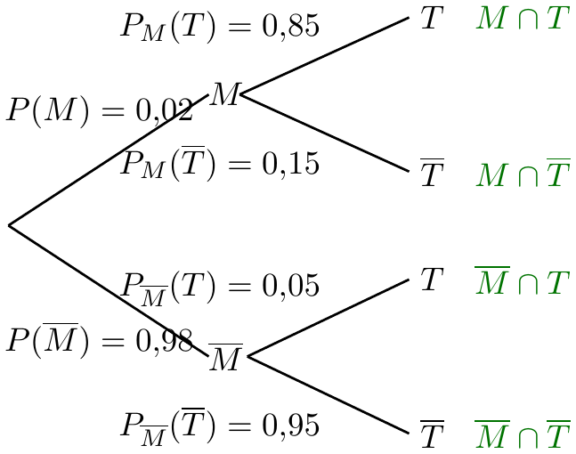
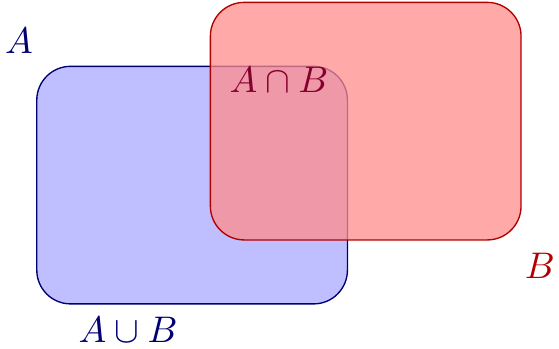

Chapitre III : Probabilités conditionnelles
Terminale STMG · Chapitre 3 — Probabilités conditionnelles · cours de Frederik de Peyrelongue
I. Notion de probabilité conditionnelle
On tire une carte au hasard dans un jeu de $32$ cartes.
Soit $A$ l'événement « Le résultat est un cœur ». Soit $B$ l'événement « Le résultat est un as ».
- Déterminer la probabilité de l'événement « Le résultat est l'as de cœur ».
- Sachant que vous avez un cœur, quelle est la probabilité d'avoir un as ?
Réponse. L'événement « Le résultat est l'as de cœur » correspond à $A\cap B$.
Alors
Soit $A$ et $B$ deux événements avec $\prob(A)\neq 0$.
On appelle probabilité conditionnelle de $B$ sachant $A$, la probabilité que l'événement $B$ se réalise sachant que l'événement $A$ est réalisé. Elle est notée $\prob_{A}(B)$ et est définie par
Donc la probabilité que le résultat soit un as sachant qu'on a tiré un cœur est :
On peut retrouver intuitivement ce résultat : en effet, sachant que le résultat est un cœur, on a une chance sur $8$ d'obtenir l'as parmi les cœurs.
Un sac contient $50$ boules, dont $20$ boules rouges et $30$ boules noires, où il est marqué soit « Gagné », soit « Perdu ».
- Sur $15$ boules rouges, il est marqué Gagné.
- Sur $9$ boules noires, il est marqué Gagné.
On tire au hasard une boule dans le sac. Soit $R$ l'événement « On tire une boule rouge » et $G$ l'événement « On tire une boule marquée Gagné ».
1) Quelle est la probabilité de tirer une boule rouge?
2) Que signifie l'évènement $R\cap G$?
2) Calculer $P(R\cap G)$.
3) Calculer la probabilité conditionnelle de tirer une boule "gagné" sachant que la boule est rouge
Correction.
1) \[ \prob(R)=\frac{20}{50}=\frac{2}{5}=0{,}4\] 2) $R\cap G$ est l'événement « On tire une boule rouge marquée Gagné ».
3) \[ \prob(R\cap G)=\frac{15}{50}=\frac{3}{10}=0{,}3 . \] 4) Donc la probabilité qu'on tire une boule marquée Gagné sachant qu'elle est rouge est
Remarque. La probabilité conditionnelle suit les règles et lois de probabilités vues pour les probabilités simples. On a en particulier :
- $0\leqslant\prob_{A}(B)\leqslant 1$ ;
- $\prob_{A}\bigl(\overline{B}\bigr)=1-\prob_{A}(B)$ ;
- $\prob(A\cap B)=\prob(A)\times\prob_{A}(B)$.
II. Arbre pondéré
Exemple
On reprend le 2e exemple étudié au paragraphe I.
L'expérience aléatoire peut être schématisée par un arbre pondéré (ou arbre de probabilité) :

Règles
La somme des probabilités des branches issues d'un même nœud est égale à $1$.
Exemples.
- À partir du nœud « On tire une boule », on a : $\prob(R)+\prob(\overline{R})=0{,}4+0{,}6=1$.
- À partir du nœud « Boule rouge », on a : $\prob_{R}(\overline{G})=1-\prob_{R}(G)=1-0{,}75=0{,}25$.
La probabilité d'une « feuille » (extrémité d'un chemin) est égale au produit des probabilités du chemin aboutissant à cette feuille.
Exemple. On considère la feuille $R\cap G$. On a :
La probabilité d'un événement associé à plusieurs « feuilles » est égale à la somme des probabilités de chacune de ces « feuilles ».
Exemple. L'événement « On tire une boule marquée Gagné » est associé aux feuilles $R\cap G$ et $\overline{R}\cap G$. On a :
(probabilité de tirer une boule noire marquée Gagné).
Donc
Exercice : calculer la probabilité d'un événement associé à plusieurs feuilles
Lors d'une épidémie chez des bovins, on s'est aperçu que, si la maladie est diagnostiquée suffisamment tôt chez un animal, on peut le guérir ; sinon la maladie est mortelle.
Un test est mis au point et essayé sur un échantillon d'animaux dont $2$ % est porteur de la maladie. On obtient les résultats suivants :
- si un animal est porteur de la maladie, le test est positif dans $85$ % des cas ;
- si un animal est sain, le test est négatif dans $95$ % des cas.
On choisit de prendre ces fréquences observées comme probabilités pour toute la population, et d'utiliser le test pour un dépistage préventif de la maladie.
On note respectivement $M$ et $T$ les événements « Être porteur de la maladie » et « Avoir un test positif ».
1) Un animal est choisi au hasard. Quelle est la probabilité que son test soit positif ?
2) Si le test du bovin est positif, quelle est la probabilité qu'il soit malade ?

Correction.
1) La probabilité que le test soit positif est associée aux deux feuilles $M\cap T$ et $\overline{M}\cap T$.
D'après l'arbre de probabilité, on a :
La probabilité que le test soit positif est égale à $6{,}6$ %.
2)
La probabilité que le bovin soit malade sachant que le test est positif est d'environ $26$ %.
III. Probabilités et indépendance
Définition
On dit que deux événements $A$ et $B$ de probabilité non nulle sont indépendants lorsque
On tire une carte au hasard dans un jeu de $32$ cartes. Soit $R$ l'événement « On tire un roi » et $T$ l'événement « On tire un trèfle ».
a) Calculer la probabilité d'avoir un roi. b) Calculer la probabilité d'avoir un roi sachant que la carte est un trèfle. c) En déduire que les évènements T et R ne sont pas indépendants.
Correction : a)
On a
Par ailleurs, $\prob_{T}(R)$ est la probabilité de tirer un roi parmi les trèfles. On a alors
Ainsi $\prob_{T}(R)=\prob(R)$ : les événements $R$ et $T$ sont donc indépendants.
b) On reprend l'expérience précédente en ajoutant deux jokers au jeu de cartes. Ainsi
Ainsi $\prob_{T}(R)\neq\prob(R)$ : les événements $R$ et $T$ ne sont donc pas indépendants.
Exercice : utiliser l'indépendance de deux événements
Dans une population, un individu est atteint par la maladie $a$ avec une probabilité égale à $0{,}005$ et par la maladie $b$ avec une probabilité égale à $0{,}01$.
On choisit au hasard un individu de cette population. Soit $A$ l'événement « L'individu a la maladie $a$ » et $B$ l'événement « L'individu a la maladie $b$ ». On suppose que les événements $A$ et $B$ sont indépendants.
- Calculer la probabilité qu'un individu soit atteint par les deux maladies.
- Calculer $\prob(A\cup B)$. Interpréter le résultat.
Correction.
1) La probabilité qu'un individu soit atteint par les deux maladies est $\prob(A\cap B)$.
Or, d'après la formule de probabilité conditionnelle, $\prob_{B}(A)=\dfrac{\prob(A\cap B)}{\prob(B)}$, soit
La probabilité qu'un individu soit atteint par les deux maladies est égale à $0{,}00005$.
2) On a
La probabilité qu'un individu choisi au hasard ait au moins une des deux maladies est égale à $0{,}01495$.
